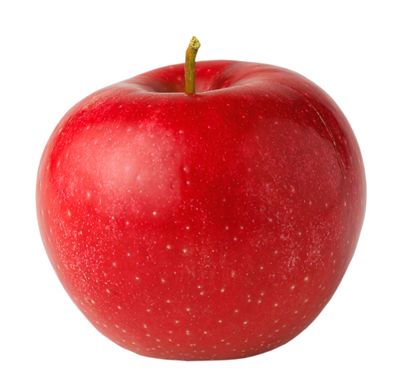

Apples
The apple is a deciduous tree, generally standing 1.8 to 4.6 m (6 to 15 ft) tall in cultivation and up to 39 ft (12 m) in the wild.[4] When cultivated, the size, shape and branch density are determined by rootstock selection and trimming method. The leaves are alternately arranged dark green-colored simple ovals with serrated margins and slightly downy undersides.[5]
The apple is a deciduous tree, generally standing 1.8 to 4.6 m (6 to 15 ft) tall in cultivation and up to 39 ft (12 m) in the wild.[4] When cultivated, the size, shape and branch density are determined by rootstock selection and trimming method. The leaves are alternately arranged dark green-colored simple ovals with serrated margins and slightly downy undersides.[5]
Blossoms are produced in spring simultaneously with the budding of the leaves, and are produced on spurs and some long shoots. The 3 to 4 cm (1.2 to 1.6 in) flowers are white with a pink tinge that gradually fades, five petaled, with an inflorescence consisting of a cyme with 4–6 flowers. The central flower of the inflorescence is called the "king bloom"; it opens first, and can develop a larger fruit.[5][6]
The fruit matures in late summer or autumn, and varieties exist with a wide range of sizes. Commercial growers aim to produce an apple that is 7.0 to 8.3 cm (2.75 to 3.25 in) in diameter, due to market preference. Some consumers, especially those in Japan, prefer a larger apple, while apples below 5.7 cm (2.25 in) are generally used for making juice and have little fresh market value. The skin of ripe apples is generally red, yellow, green, pink, or russetted although many bi- or tri-colored varieties may be found.[7] The skin may also be wholly or partly russeted i.e. rough and brown. The skin is covered in a protective layer of epicuticular wax,[8] The flesh is generally pale yellowish-white,[7] though pink or yellow flesh is also known.